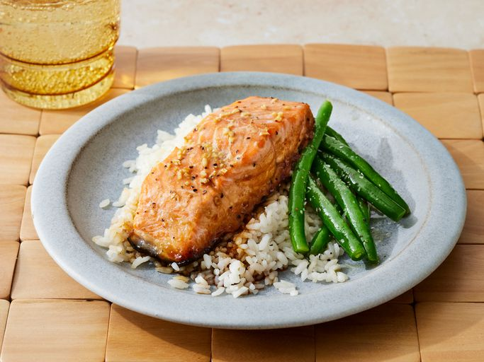

Maple Salmon
Description
This maple glazed salmon is delicious and very easy to prepare. This restaurant-worthy maple salmon recipe is as good as it gets! Plus, it's easy to make with simple ingredients you probably already have on hand.
Ingredients
- Maple syrup
- Soy sauce
- Garlic
- Seasonings
- Salmon
Steps
- Make the marinade and cut the salmon into fillets.
- Marinate in the fridge for at least 30 minutes.
- Bake in the preheated oven until the fish flakes easily.